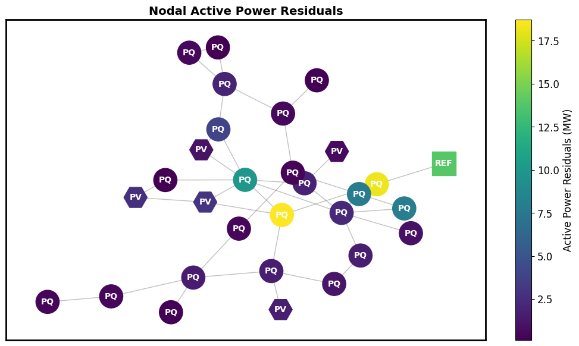
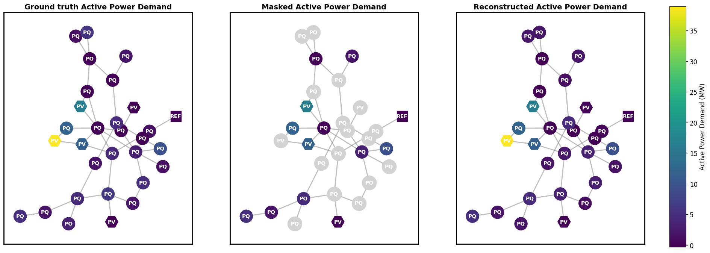
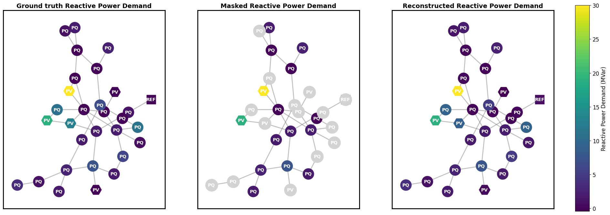
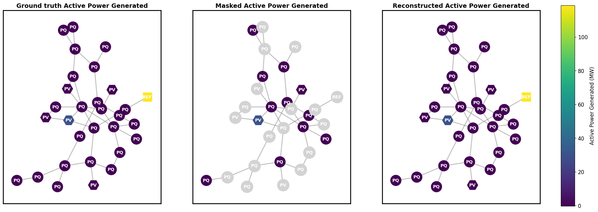
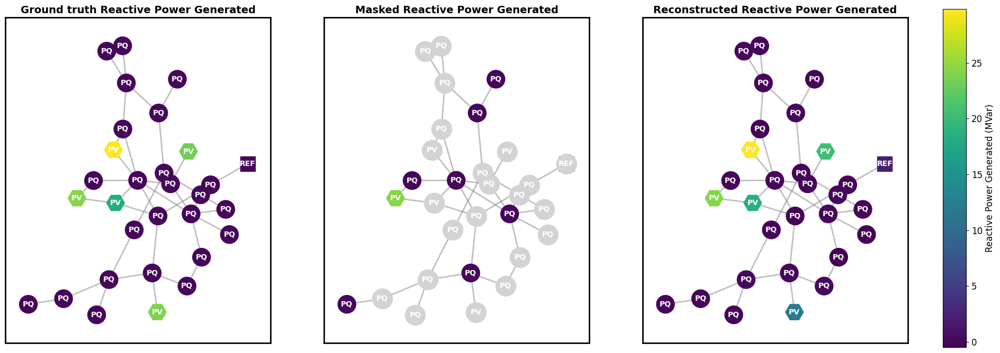
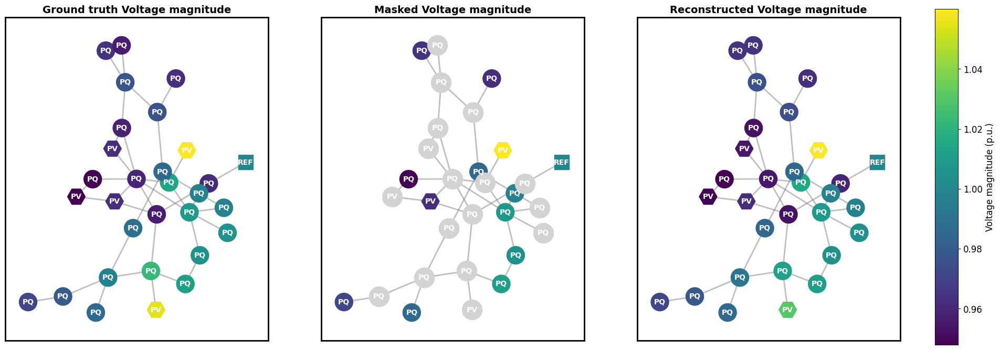
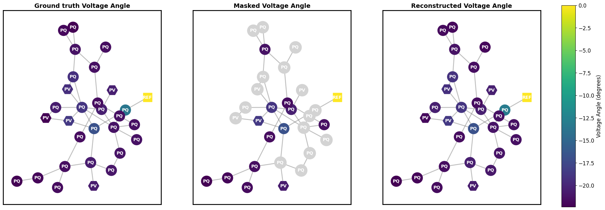

Visualizing predictions of GridFM
👉 Link to the tutorial on Google Colab
This notebook demonstrates the state reconstruction capabilities of GridFM-v0.2, a graph-based neural network model for transmission grids. We focus on the IEEE case30 network, a standard benchmark with 30 buses, chosen for its compact size and suitability for visualization.
The dataset includes 1,023 load scenarios, each representing a different operating condition of the grid. For each scenario, the model reconstructs the six key features of the power flow solution that are masked:
- Active Power Demand (MW)
- Reactive Power Demand (MVar)
- Active Power Generated (MW)
- Reactive Power Generated (MVar)
- Voltage Magnitude (p.u.)
- Voltage Angle (degrees)
import sys
if "google.colab" in sys.modules:
try:
!git clone https://github.com/gridfm/gridfm-graphkit.git
%cd /content/gridfm-graphkit
!pip install .
%cd examples/notebooks/
except Exception as e:
print(f"Failed to start Google Collab setup, due to {e}")
from gridfm_graphkit.datasets.powergrid_datamodule import LitGridDataModule
from gridfm_graphkit.io.param_handler import NestedNamespace
from gridfm_graphkit.tasks.feature_reconstruction_task import FeatureReconstructionTask
from gridfm_graphkit.utils.visualization import visualize_error, visualize_quantity_heatmap
from gridfm_graphkit.datasets.globals import PD, QD, PG, QG, VM, VA
import yaml
import torch
import numpy as np
import random
Load YAML configuration file¶
config_path = "../config/case30_ieee_base.yaml"
with open(config_path) as f:
config_dict = yaml.safe_load(f)
config_args = NestedNamespace(**config_dict)
torch.manual_seed(config_args.seed)
random.seed(config_args.seed)
np.random.seed(config_args.seed)
Initialize the DataModule¶
data_module = LitGridDataModule(config_args, "../data")
data_module.setup("test")
test_loader = data_module.test_dataloader()
Load the pre-trained model GridFM-v0.2¶
model = FeatureReconstructionTask(
config_args, data_module.node_normalizers, data_module.edge_normalizers
)
state_dict = torch.load("../models/GridFM_v0_2.pth")
model.load_state_dict(state_dict)
Perform inference, batch size is equal to 1 for further visualization purposes¶
batch = next(iter(test_loader[0]))
model.eval()
with torch.no_grad():
output = model(
x=batch.x,
pe=batch.pe,
edge_index=batch.edge_index,
edge_attr=batch.edge_attr,
batch=batch.batch,
mask=batch.mask,
)
Visualize Nodal Active Power Residuals¶

Visualize the state reconstruction capability of gridFM-v0.2 for each feature:¶
- Active Power Demand (MW)
- Reactive Power Demand (MVar)
- Active Power Generated (MW)
- Reactive Power Generated (MVar)
- Voltage Magnitude (p.u.)
- Voltage Angle (degrees)
visualize_quantity_heatmap(
batch,
output,
PD,
"Active Power Demand",
"MW",
data_module.node_normalizers[0],
)

visualize_quantity_heatmap(
batch,
output,
QD,
"Reactive Power Demand",
"MVar",
data_module.node_normalizers[0],
)

visualize_quantity_heatmap(
batch,
output,
PG,
"Active Power Generated",
"MW",
data_module.node_normalizers[0],
)

visualize_quantity_heatmap(
batch,
output,
QG,
"Reactive Power Generated",
"MVar",
data_module.node_normalizers[0],
)

visualize_quantity_heatmap(
batch,
output,
VM,
"Voltage magnitude",
"p.u.",
data_module.node_normalizers[0],
)

visualize_quantity_heatmap(
batch,
output,
VA,
"Voltage Angle",
"degrees",
data_module.node_normalizers[0],
)
